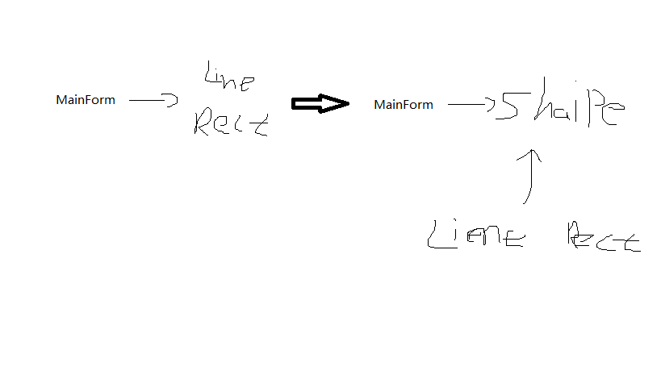

设计原则
重新认识面向对象
隔离变化
从宏观层面上来看，面向对象的构建方式更能适应软件的变化， 能将变化所带来的影响减为最小
各司其职
从微观层面来看，面向对象的方式更强调各个类的责任。
由于需求变化导致的新增类型不应该影响原来类型的实现
对象是什么
从语言实现层面来看，对象封装了代码和数据
从规格层面讲，对象是一系列可被使用的公共接口
从概念层面讲，对象是某种拥有责任的抽象
八大面向对象设计原则
依赖倒置原则（DIP）
- 高层模块(稳定)不应该依赖低层模块（变化），二者都应该依赖于抽象（稳定）
- 抽象（稳定）不应该依赖与实现细节（变化），实现细节应该依赖与抽象（稳定） 
开闭原则（OCP）
- 对扩展开放，对更改封闭
- 类模块应该可扩展，但是不可修改
单一职责原则（SRP）
- 一个类应该仅有一个引起它变化原因
- 变化的方向隐含着类的责任
里式替换原则（LSP）
- 子类必须能够替换他们的基类（IS—A）
- 继承表达类型抽象
- 如果我是你的子类那么所有需要父类的地方我都可以传过去。
接口隔离原则（ISP）
- 不应该强迫客户程序依赖他们不用的方法
- 接口应该小而完备
- 所谓小就是不必要的方法不要public出去，如果子类就使用protect修饰； 如果本类使用就private修饰。因为public出去你就需要维护。
优先使用对象组合，而不是类继承
- 类继承通常为“白箱复用”，对象组合通常为“黑箱复用”
- 继承在某种程度上破坏了封装性，子类父类耦合度高
- 而对象组合则只要求被组合的对象具有良好的定义的接口。耦合度低
封装变化点
- 使用封装来创建对象之间的分界层，让设计者可以在分界的一侧进行修改，而不会对另一侧有影响
针对接口编程，而不是针对实现编程
- 不将变量类型声明为某个特定的具体类，而是声明为某个接口
- 客户程序无需获知对象的具体类型，只需知道对象的接口
- 减少系统中各部分的依赖从而实现“高内聚低耦合”的类型设计方案